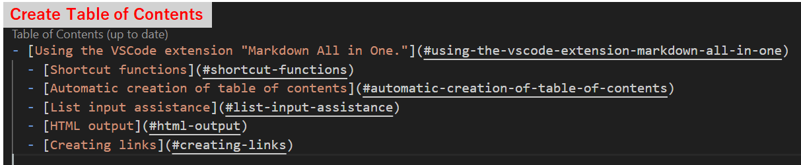

2021/08/30
Using the VSCode extension "Markdown All in One."
Installing the "Markdown All in One" extension in VSCode is convenient for writing Markdown.
- It has a full range of shortcut functions.
- It recognizes the headings in a page and creates a table of contents.
- When you add a line to a list (bulleted or numbered), it automatically makes the next line a list as well.
- MarkDown files can be converted to HTML.
- Easily create links.
Markdown All in One - Visual Studio Marketplace
Extension for Visual Studio Code - All you need to write Markdown (keyboard shortcuts, table of contents, auto preview and more)
Shortcut functions
| keyboard operation | function |
|---|---|
| Ctr+B | bold (**) |
| Ctr+I | italic(*) |
| Ctr+Shift+] | Heading (#), # increases with each run |
| Ctr+Shift+[ | Heading (#), # decreases with each run |
| Ctr+M | Inserting Formulas($) |
| Alt+C | Check box ON ([x])、Press again to turn OFF |
| Alt+S | strike-through line(~~) |
| Alt+Shift+F | Table formatting |
The following are useful shortcuts that are already built into VSCode.
| keyboard operation | function |
|---|---|
| Ctr+K → v | Preview display on the side |
| Ctr+shift+v | Preview display on the tab |
Automatic creation of table of contents
It automatically generates a table of contents using headings (#).
- auto generate：Ctrl + Shift + p → Markdown All in One: Create Table of Contents
- update ：Ctrl + Shift + p → Markdown All in One: Update Table of Contents
↓ like this.

Furthermore, it automatically assigns numbers to the headings.
- Number addition：Ctrl + Shift + p → MarkDown All in One: Add/Update section numbers
- Number removal ：Ctrl + Shift + p → MarkDown All in One: Remove section numbers
↓ like this.
If there is a heading that you do not want to include in the table of contents, add "<!-- omit in toc -->" to the line before the heading.
List input assistance
When you are creating a list such as "-" or "1.", the list is automatically added when you add a line.
Additionally, pressing the tab key indents the list items.
HTML output
You can convert the currently open Markdown file to HTML.
Ctr+Shift+p → Markdown All in One: Print current document to HTML
Creating links
When you have copied an URL, and select text then press Ctrl+V, it will automatically create a link.